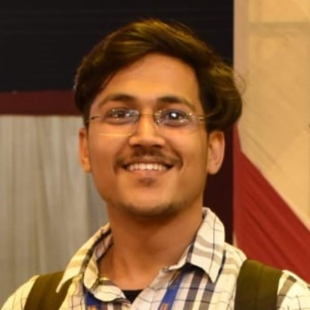

Resume
Milind Kumar Yadav
Ph.D Scholar


Orchid ID: 0000-0001-9250-3104
About
Research
Education
Publications
Conferences
Milind is a Senior Research Fellow in the Department of Humanities and Social Sciences at IIT Roorkee. His research focus revolves around health insurance in India, as evidenced by his ongoing PhD thesis work. With a Master of Philosophy degree in Economics, Milind brings a strong academic background to his research endeavors. His experience as a field investigator on an ICSSR project and as a Teaching Assistant in the NPTEL project "Exploring Survey Data on Health Care" showcases his practical involvement in research initiatives. Notably, Milind's academic achievements include qualifying the NET-JRF exam conducted by UGC. Milind has showcased his research acumen by presenting numerous papers in both national and international conferences. His contributions to the academic community extend to publications in esteemed international journal and newspaper.